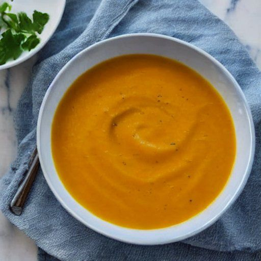

Potage à la courge butternut
Préparation: 15 minutes
Cuisson: 15 minutes
Total: 30 minutes
Ingrédients
-
2 oignons

-
2 courge butternut
-
3 gousse d'ail
-
2 c. à table d'huile
-
2 cube de bouillon aromatisé au poulet
-
poivre
-
eau
Instructions
Couper grossièrement les oignons, les courges et l'ail.
- 2 oignons
- 2 courge butternut
- 3 gousse d'ail
Dans un autocuiseur, faire revenir les légumes dans un peu d'huile pour les dorer. Commencer avec les oignons, ensuite l'ail et finalement les morceaux de courges.
Ajouter assez d'eau pour recouvrir les légumes. Ajouter les épices et cuire une quinzaine de minutes sous pression. Attention à ne pas laisser trop longtemps sur le feu pour éviter que les courges ne brûlent dans le fond du chaudron.
Réduire en purée à l'aide d'un bras mélangeur.